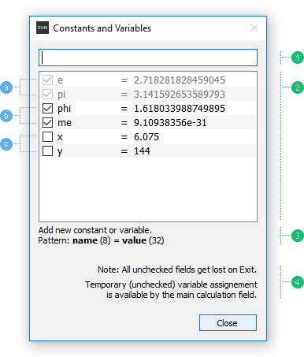

To add a constant or a variable, write an assignment by defined Pattern (the image below - 3) and press Enter (Return). If assignment is valid, it will appear in the list checked - as a permanent. Adding temporary (unchecked) variable is also available by Calculation Field (see Constants and variables - "Variable assignment").
Permanent constants and variables (the image below - b) are saved and available across different sessions, unlike temporary (unchecked) ones, which are only available for current session, and get removed after Exit. So, if you have an expression in History with some temporary variables, and want to reuse it, that variables will be no longer recognized, and an error message will appear instead. That's why it's highly recommended to make an assignment of temporary variable by Calculation Field (see Constants and variables - "Variable assignment"), thereby having the chance to find later the assignment of the missing variable in History.
Temporary variables (the image below - c) can always be checked within the session, before Exit, becoming so permanent.
All items in list, except built-ins constants (the image below - a), can be removed by context menu or Delete keyboard key.

Constants and Variables dialog.
1. Input Field - see Pattern to add constant or variable, 2. Constants and Variables list, 3. Status and Pattern - shows also errors, 4. Note.
a) Built-in constants - locked, b) Permanent - checked, c) Temporary - unchecked (will be removed after Exit).
The valid characters for name input are the uppercase and lowercase letters, the underscore "_", and, except for the first character, the digits 0 through 9 (maximum length is in parentheses).
The valid numbers for value input are integers, decimal, binary, octal and hexadecimal numbers (maximum length is in parentheses).
See Calculations - "Lexical analysis" for more information.